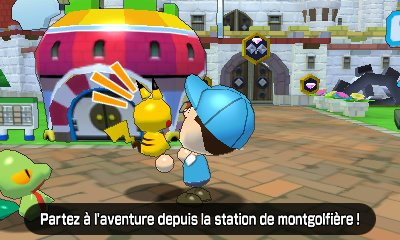
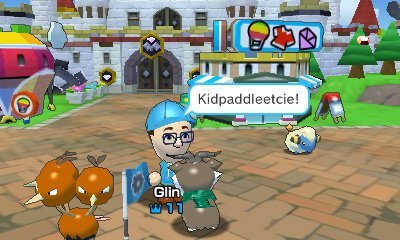
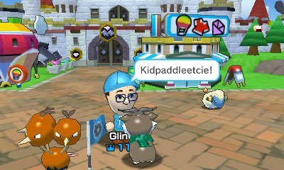
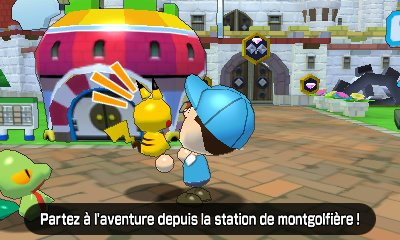
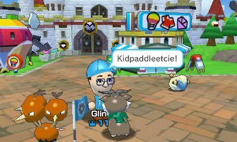
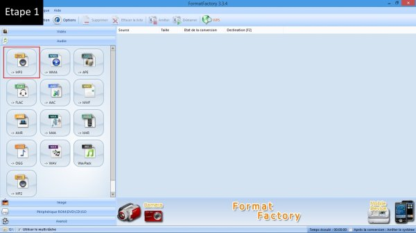
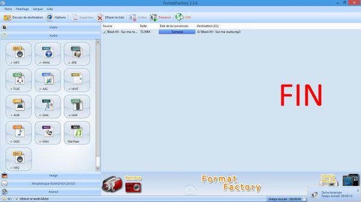
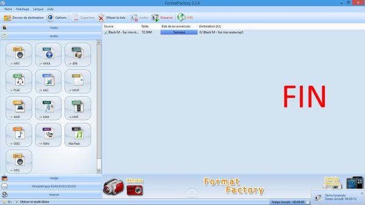
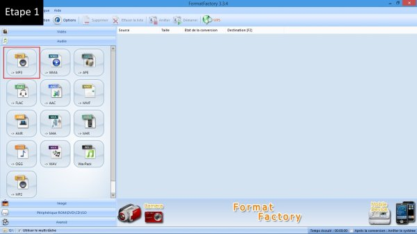
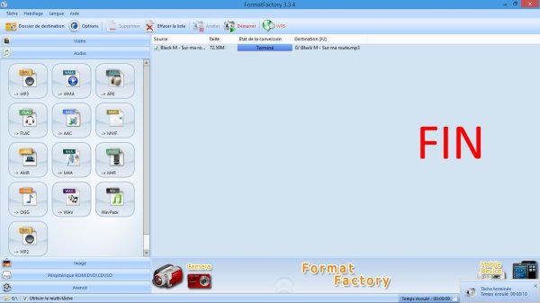

KidpaddleetcieGlin

Description :
Le Blog d'une personne aillant découvert internet en 2007 qui partage une partie de sa vie mais surtout ses réflexions, ses découvertes et ses cours!
Bon, je ne vous garantit pas que 100% du contenu est fiable mais aux moins je l'approuve! :)
N'oubliez pas de me retrouver sur les autres sites internet du réseaux KidpaddleetcieGlin retrouvable dans le premier article de chaque page. ^-^
Bon, je ne vous garantit pas que 100% du contenu est fiable mais aux moins je l'approuve! :)
N'oubliez pas de me retrouver sur les autres sites internet du réseaux KidpaddleetcieGlin retrouvable dans le premier article de chaque page. ^-^
Je bosse actuellement pour la chaîne Grenier des Joueurs


![[ANA JDG] Asterix and the Great Rescue - Megadrive](../vi/6oUXi0ckLmA/default.jpg)
![[ Présentation pour la chaîne Grenier des Joueurs ] JDG Prod](../art/SHAR.6419.583.2.jpg)
Son morceau préféré


Retour au blog de KidpaddleetcieGlin
Salut tout le monde, aujourd'hui je vous présente le Wikia YouTube Francophone qui est un genre de Wikipédia mais pas une encyclopédie en générale en faîtes vu que le but est de référencer un maximum de YouTubers et de les présenté le plus précisément possible.
J'ai rejoint le projet ce 11 Juillet 2016, d'ailleurs voici ma page pour vous rendre compte de mes apports à ce projet qui est, comme d'habitude avec moi, très dense...comme le blog, ma chaîne YouTube, mon Dailymotion,...
Si je peux mettre un sacré bon point à ce Wikia c'est qu'il utilise le système de badge qui rapporte des points (un peu comme sur la Xbox avec les trophées) et permettent de faire un classement des membres du Wikia les plus actifs. Moi, par exemple, en ce 18 Juillet,je suis 19ème grâce à mes 290 points... et je suis arriver à rentrer dans le Top20 en même pas une semaine d'activité alors que certains sont là depuis début 2014.
Le Wikia existe depuis le 8 mars 2014 d'après sa page d'accueil .
Le membre que j'aime le plus, après moi parce que je suis toujours un Dieu égocentrique, c'est LostSword parce qu'il m'a permis d'affirmer un peu plus les poopers dans le Wikia grâce à la création des badges relatifs aux pages des poopers...en plus,LostSword est vraiment un jeune ambitieux et il est doué pour la reformulation de phrase et la restructuration de page!Il est super-sympa avec moi en plus :D
Voila, j'espère que vous penserez à nous rejoindre parce qu'on est pas beaucoup en ce moment (on est que 81) et la majorité n'ont pas amené autant que moi sur ce projet...en même temps,je m'y connais en YouTuber et en YouTube Poop alors c'est facile quand on fait partie d'une confrérie :p
Merci d'avoir lu cet article!
Voila,je ne suis pas propriétaire des vidéos mais l'information se doit d'être partagée!
Playlist de Pair-à-Pair de DanyCaligula
https://www.youtube.com/playlist?list=PLm_diWt_xURhIsMhJz_m6dS6fiO42w_l6
Playlist de Pair-à-Pair de DanyCaligula
https://www.youtube.com/playlist?list=PLm_diWt_xURhIsMhJz_m6dS6fiO42w_l6
Vous croyez que la publicité est partout et est un virus? En effet, c'est le virus du capitalisme qui oserait violer votre vie privé ou vous mentir pour vous faire consommer des produits présentés comme révolutionnaires ou alors en discriminants les autres produits de la concurrence.
![[La publicité]Le JEP (l’organe d’autodiscipline du secteur de la pub en Belgique)](../5252/79895252/pics/3278235306_1_2_mCGV5YST.png)
La JEP pour "le Jury d'Éthique Publicitaire" est l'organe d'autodiscipline du secteur de la PUB en Belgique et sert à vérifier les messages publicitaires afin de voir si les règles de l'éthique sont respectées en fonction des lois et des codes d'autodisciplines qui existent pour la pub.
Ses fonction sont simples:
1.en collaboration avec des annonceurs, des agences et des médias, il est chargé d'examiner les plaintes que les consommateurs ont sur un produit, un service,...
2.S'occuper des demandes d'avis soumises de manière libre par ses collaborateurs (annonceurs, agences, médias).
Remarquer que ce sont des fonctions d'examen et traitement, du coup le système est rapide (au moins UN SYSTÈME RAPIDE EN BELGIQUE!!!)!
Maintenant l'exception que le JEP peut accepter est lorsque le Président du Jury de Première instance soumet un message publicitaire à l'examen du JEP, suite à une initiative ou à la demande d'un ou plusieurs membres de son Jury.
Les décisions prises par le JEP sont basées tant sur les dispositions légales (loi sur les pratiques de commerce, de législation par catégorie de produits et services,...) que sur les dispositions auto-disciplinaires (codes, règles, recommandations).
Pour plus d'information sur le JEP: http://www.jep.be/fr/faq/quest-ce-que-le-jep
La JEP pour "le Jury d'Éthique Publicitaire" est l'organe d'autodiscipline du secteur de la PUB en Belgique et sert à vérifier les messages publicitaires afin de voir si les règles de l'éthique sont respectées en fonction des lois et des codes d'autodisciplines qui existent pour la pub.
Ses fonction sont simples:
1.en collaboration avec des annonceurs, des agences et des médias, il est chargé d'examiner les plaintes que les consommateurs ont sur un produit, un service,...
2.S'occuper des demandes d'avis soumises de manière libre par ses collaborateurs (annonceurs, agences, médias).
Remarquer que ce sont des fonctions d'examen et traitement, du coup le système est rapide (au moins UN SYSTÈME RAPIDE EN BELGIQUE!!!)!
Maintenant l'exception que le JEP peut accepter est lorsque le Président du Jury de Première instance soumet un message publicitaire à l'examen du JEP, suite à une initiative ou à la demande d'un ou plusieurs membres de son Jury.
Les décisions prises par le JEP sont basées tant sur les dispositions légales (loi sur les pratiques de commerce, de législation par catégorie de produits et services,...) que sur les dispositions auto-disciplinaires (codes, règles, recommandations).
Pour plus d'information sur le JEP: http://www.jep.be/fr/faq/quest-ce-que-le-jep
La publicité est vraiment vicieuse et attaque sur plein de front, voyons-en les 3 différentes approches:
1.Le schéma de Lasswell (1930-1940)
Ce schéma est simple, le voici:
![[La publicité]Les différentes approches](../5252/79895252/pics/3278231816_1_4_k9NITQG8.jpg)
source: http://fr.slideshare.net/dcornelis_slide/chapitre1-theories-de-la-communication3epartie
Là, c'est le ciblage du public et l'analyse des effets de ce ciblage qui est surtout mit en avant par Lasswell. Voyons ça comme un schéma d'étude d'un marché en fonction de 5 variables interdépendantes.
2.Le modèle AIDA
Encore une illustration assez intéressent:
![[La publicité]Les différentes approches](../5252/79895252/pics/3278231816_1_6_1mKpAql2.png) source: http://www.institut-numerique.org/partie-i-revue-de-litterature-513ee17742186
source: http://www.institut-numerique.org/partie-i-revue-de-litterature-513ee17742186
Ce modèle est la représentation parfaite du procédé de la publicité que nous subissons à chaque fois que nous allumons la TV, la radio ou encore un site de streaming.
C'est LA DÉMARCHE MARKETING!!!!
Maintenant, des spécialistes ont trouvé une faille dans le modèle AIDA car le modèle ne fonctionne pas lorsqu'il s'agit d'un achat “coup de c½ur”. Malgré cette faille, ce modèle reste toujours d'actualité et est toujours utilisé de nos jours, car celui-ci est considéré comme une “formule magique”.
Maintenant, il peut y avoir une cinquième étape à cette formule magique (rien n'est vraiment parfait) car malgré que ce modèle soit toujours utilisé, on remarqua qu'il manquait une dernière étape pour boucler ce modèle. Celle-ci est apparue suite à l'évolution du mode de consommation des individus. Ce changement est dû entre autre aux médias, et aux technologies qui ont évolué, ainsi que des besoins de la population. Voilà pourquoi ce modèle devint incomplet aux yeux des marqueteurs. Cette fameuse cinquième étape est la "satisfaction". Son but est assez important, car elle permet de fidéliser le client pour vendre d'autres produits et services et surtout de le transformer en client assuré.
3.Le neuromarketing
C'est une technique qui met en lien direct les neurosciences au marketing, à la communication, et à la pub. Cet outil est très intéressant à analyser, du point de vue du comportement du consommateur en présence de marques via les réponses émises par le cerveau.
3 moyens sont utilisés:
1)L'IRM: considérée comme la technique la plus précise du neuromarketing, elle permet d'avoir une vision complète du cerveau.
Utilisée dans les films pour savoir à quelle scène du film le témoin est le plus sensible afin de calibrer au mieux le packshot (= “une photographie de haute qualité d'un produit sur un fond le plus souvent uni servant à présenter le produit sur catalogue, sur un site web ou encore dans une démarche de contrôle qualité au sein d'une entreprise”)
2)EFG: qui est l'Electro-Encéphalogramme permettant de mesurer à l'aide de champs électriques chaque milliseconde sur la surface du cerveau via un casque muni d'électrodes.
3)Eye tracking: méthode permettant de se mettre à la place des yeux du consommateur, afin d'essayer de voir dans un supermarché par exemple quels seraient les emplacements, les couleurs qui attireraient plus spécifiquement l'½il du consommateur. Bien sur, ça se fait en simulation, pas dans de vrais magasins!
N'oubliez pas que le but de l'entreprise afin d'être la plus rentable possible, c'est d'essayer d'avoir une communication de plus en plus efficace pour une marque et une pub. C'est pour ça que Coca-Cola ou Facebook s'affichent toujours de plus en plus et
(pour Facebook ou encore YouTube et Dailymotion) optimiser leurs pages webs selon les intérêts de CHACUN des internautes (avec le système des cookies) afin de lui afficher des PUBs qui ont le meilleur potentiel à le faire consommer.
N'oubliez pas qu'un "cookie" est "un petit fichier texte au format alphanumérique déposé sur le disque dur de l'internaute par le serveur du site visité ou par un serveur tiers."
source:http://www.definitions-marketing.com/definition/cookie/
Maintenant, dans le neuromarketing aussi, il y a une faille car même si des sondages sont réalisés afin d'évaluer si tel ou tel produit marcherait, les résultats seront de toute manière erronés car l'irrationalité de nos actions ne peut être mesurée. Malgré tout, les industries continueront de développer le neuromarketing, pour tenter de comprendre la dimension irrationnelle du cerveau, dans le but de consolider la valeur que le cerveau a de la marque.
1.Le schéma de Lasswell (1930-1940)
Ce schéma est simple, le voici:
source: http://fr.slideshare.net/dcornelis_slide/chapitre1-theories-de-la-communication3epartie
Là, c'est le ciblage du public et l'analyse des effets de ce ciblage qui est surtout mit en avant par Lasswell. Voyons ça comme un schéma d'étude d'un marché en fonction de 5 variables interdépendantes.
2.Le modèle AIDA
Encore une illustration assez intéressent:
source: http://www.institut-numerique.org/partie-i-revue-de-litterature-513ee17742186Ce modèle est la représentation parfaite du procédé de la publicité que nous subissons à chaque fois que nous allumons la TV, la radio ou encore un site de streaming.
C'est LA DÉMARCHE MARKETING!!!!
Maintenant, des spécialistes ont trouvé une faille dans le modèle AIDA car le modèle ne fonctionne pas lorsqu'il s'agit d'un achat “coup de c½ur”. Malgré cette faille, ce modèle reste toujours d'actualité et est toujours utilisé de nos jours, car celui-ci est considéré comme une “formule magique”.
Maintenant, il peut y avoir une cinquième étape à cette formule magique (rien n'est vraiment parfait) car malgré que ce modèle soit toujours utilisé, on remarqua qu'il manquait une dernière étape pour boucler ce modèle. Celle-ci est apparue suite à l'évolution du mode de consommation des individus. Ce changement est dû entre autre aux médias, et aux technologies qui ont évolué, ainsi que des besoins de la population. Voilà pourquoi ce modèle devint incomplet aux yeux des marqueteurs. Cette fameuse cinquième étape est la "satisfaction". Son but est assez important, car elle permet de fidéliser le client pour vendre d'autres produits et services et surtout de le transformer en client assuré.
3.Le neuromarketing
C'est une technique qui met en lien direct les neurosciences au marketing, à la communication, et à la pub. Cet outil est très intéressant à analyser, du point de vue du comportement du consommateur en présence de marques via les réponses émises par le cerveau.
3 moyens sont utilisés:
1)L'IRM: considérée comme la technique la plus précise du neuromarketing, elle permet d'avoir une vision complète du cerveau.
Utilisée dans les films pour savoir à quelle scène du film le témoin est le plus sensible afin de calibrer au mieux le packshot (= “une photographie de haute qualité d'un produit sur un fond le plus souvent uni servant à présenter le produit sur catalogue, sur un site web ou encore dans une démarche de contrôle qualité au sein d'une entreprise”)
2)EFG: qui est l'Electro-Encéphalogramme permettant de mesurer à l'aide de champs électriques chaque milliseconde sur la surface du cerveau via un casque muni d'électrodes.
3)Eye tracking: méthode permettant de se mettre à la place des yeux du consommateur, afin d'essayer de voir dans un supermarché par exemple quels seraient les emplacements, les couleurs qui attireraient plus spécifiquement l'½il du consommateur. Bien sur, ça se fait en simulation, pas dans de vrais magasins!
N'oubliez pas que le but de l'entreprise afin d'être la plus rentable possible, c'est d'essayer d'avoir une communication de plus en plus efficace pour une marque et une pub. C'est pour ça que Coca-Cola ou Facebook s'affichent toujours de plus en plus et
(pour Facebook ou encore YouTube et Dailymotion) optimiser leurs pages webs selon les intérêts de CHACUN des internautes (avec le système des cookies) afin de lui afficher des PUBs qui ont le meilleur potentiel à le faire consommer.
N'oubliez pas qu'un "cookie" est "un petit fichier texte au format alphanumérique déposé sur le disque dur de l'internaute par le serveur du site visité ou par un serveur tiers."
source:http://www.definitions-marketing.com/definition/cookie/
Maintenant, dans le neuromarketing aussi, il y a une faille car même si des sondages sont réalisés afin d'évaluer si tel ou tel produit marcherait, les résultats seront de toute manière erronés car l'irrationalité de nos actions ne peut être mesurée. Malgré tout, les industries continueront de développer le neuromarketing, pour tenter de comprendre la dimension irrationnelle du cerveau, dans le but de consolider la valeur que le cerveau a de la marque.
Identité de l'auteur
Prénom : François
Nom : Heinderyckx
Date de naissance : Inconnue
Date de décès : inexistant (toujours en vie)
Travail : Professeur en sociologie des médias et la communication politique à l'Université Libre de Bruxelles (ULB)
Titre et sous-titre de l'édition originale de l'essai
LA MALINFORMATION - PLAIDOYER POUR UNE REFONDATION DE L' INFORMATION
Date de la première publication : 2003
Référence de l'édition utilisée
HEINDERYCKX, F., La malinformation: plaidoyer pour une refondation de l'information, Bruxelles, Labor, 2003
Reproductions de la 1ère et 4e de couverture
![[Compte rendu d’un essai]François Heinderyckx « la malinformation, Plaidoyer pour une refondation de l’information »](../5252/79895252/pics/3272353262_1_2_P6Mdn9Rh.png)
Analyse du paratexte (mise en valeur du livre)
Le paratexte éditorial : L'auteur a choisi une illustration représentant un homme assis sur des journaux en train de regarder une télé, cet homme est dans la position du célèbre penseur d'Auguste Rodin.
En ce qui est de la quatrième de couverture, le ton est mis sur un paragraphe décrivant le sujet de l'essai qui est la dégradation des informations relatées par les médias.
Le titre est assez important, la combinaison entre « mal » et « information » intrigue fortement le futur lecteur !
L'introduction : l'auteur a tenu à expliquer le pourquoi de son essai, mais aussi un peu présenter le syndrome de la « malinformation » !
- Rapports entre l'½uvre considérée et des faits d'histoire générale : l'essai ne fait pas de lien avec un fait historique !
Aspects textuels
- L'ouvrage a une table des matières assez longue permettant une lecture structurée et une recherche rapide d'un extrait.
- La thèse est « la non-conformité de l'information accessible aux besoins et attentes légitimes de chacun » (référence : p.23 de l'essai). L'auteur met en valeur les arguments suivants :
> soucis d'audimat/bénéfices (audience, lectorat) (ce qui les force à créer des émissions accessible et donc peu recherché) ;
> vitesse de publication (de plus en plus rapide et donc de moins en moins travaillée) ;
> soucis d'exclusivité (plus d'info, plus de contenu, plus de chance d'avoir de l'exclusif) ;
> partenariat avec des secteurs économiques et industriels (qui imposent leurs règles aux médias).
- Les exemples donnés par l'auteur sont les contenus des journaux (papier, télé) qui sont bien de plus en plus « descriptifs » et donc beaucoup moins travaillés qu'un article mettant en avant une étude.
Les médias relatent, les médias deviennent passifs et ne deviennent que des vecteurs d'informations qui ne font que partager sans questionnement des faits !
- L'auteur est redondant sur le fait que les médias privilégient les contenus pour le « grand public » au détriment de contenu plus précis, plus travaillé permettant une compréhension du monde qui nous entoure.
-Le message comporte des idées non-discutables, le fait que les journalistes soient poussés à juste relater met déjà un risque pour le métier qui est à la base fait pour mettre en relation des informations, pas seulement les recueillir ! Il y a également l'idée que les médias se veulent plus favorables à des contenus divertissants qu'à des contenus plus informant ce qui amène le consommateur à s'éloigner du désir d'apprendre, de comprendre le monde !
Expérience de lecture
- Je n'ai pas eu de mal à lire cet essai, car le sujet central est « les médias » ce qui regroupe la télé, la radio, internet et le journal. Ces médias, je vis avec eux tout le temps et l'essai nous explique juste leur déchéance qui implique une croissance des informations pas travaillées (n'ayant pas été étudiées par les journalistes, juste des descriptions) mais aussi du nombre de télé-réalités, jeux télévisés, etc. ce dont je suis témoin quand je vais sur internet ou que je regarde la TV tous les jours !
- Les idées de l'essai me paraissent justes, car je ressens bien la mise en avant de contenu à but humoristique et le manque de travail dans les journaux télévisés chaque fois que j'allume mon PC ou ma TV !
- Je suis d'accord avec la thèse de l'auteur, car j'ai bien compris où il voulait en venir et j'ai trouvé ses arguments dans mon propre quotidien !
- La lecture de l'essai n'a pas vraiment fait évoluer ma vision du sujet abordé, car c'est comme une synthèse de ce que je constate au quotidien à chaque fois que je tente de suivre l'actualité ou me renseigner sur un fait.
- Voici un extrait contenant un exemple (p.12-13)
« La masse d'information existant dans notre environnement nous trompe sur l'ampleur de l'information-sens en raison d'un taux invraisemblable de redondance. Autrement dit, une même information, un même signifié, ou un même message peuvent se multiplier et se répéter sous diverses formes et sur divers supports. Cette redondance prend une ampleur considérable et se cache parfois à peine derrière de timides tentatives de reformatage ou de rhabillage.
Les médias manifestent ce phénomène de façons spectaculaires. On peut y distinguer trois niveaux de redondance. La redondance que nous pourrions qualifier de « primaire » consiste en la diffusion de contenus tels que des films, des feuilletons, des séries, des vidéoclips, des chansons, des bandes dessinées ou « comics strips » des publicités, des photos, qui peuvent être trouvés à l'identique sur plusieurs supports médiatiques, dans différents pays et à différentes époques. Une redondance « secondaire » s'articule autour de déclinaison ou d'adaptations cosmétiques de contenus ou concepts préexistants. C'est le cas de nombreux jeux télévisés ou émissions de variété, mais aussi d'une certaine presse magazine ou de publicités. Il s'agit de produits conçus et éprouvés sur un marché primaire puis diffusés dans le monde sous formes qui, à partir de quelques ajustements, acquièrent une saveur locale qui masque leur nature fondamentalement indifférenciée et donc redondante.
Enfin, une redondance « tertiaire » tient au fait que les médias recourent à un nombre limité de sources et de ressources. Ce partage de matière première donne lieu à la plus insidieuse des redondances : même dépêches, image et photos pour les médias d'information ; mêmes images de vidéos amateurs, de bêtisier, de caméras de surveillance ou de police, de records du monde farfelus.
L'ensemble de ces facteurs de redondance engendre dans les médias une tendance à l'indifférenciation et à l'uniformisation, parfois au conformisme. La rationalité économique qui sous-tend et consolide cette redondance entrave gravement la créativité et l'indépendance des médias. Paradoxalement, ce nivellement des contenus permet, fonde même l'actuel, foisonnement des supports médiatiques (multiplication des chaînes de télévision, de radio, de magazines spécialisés, etc.), puisque les contenus redondants se révèlent plus rentables et moins risqués (moins onéreux et éprouvés). »
Prénom : François
Nom : Heinderyckx
Date de naissance : Inconnue
Date de décès : inexistant (toujours en vie)
Travail : Professeur en sociologie des médias et la communication politique à l'Université Libre de Bruxelles (ULB)
Titre et sous-titre de l'édition originale de l'essai
LA MALINFORMATION - PLAIDOYER POUR UNE REFONDATION DE L' INFORMATION
Date de la première publication : 2003
Référence de l'édition utilisée
HEINDERYCKX, F., La malinformation: plaidoyer pour une refondation de l'information, Bruxelles, Labor, 2003
Reproductions de la 1ère et 4e de couverture
Analyse du paratexte (mise en valeur du livre)
Le paratexte éditorial : L'auteur a choisi une illustration représentant un homme assis sur des journaux en train de regarder une télé, cet homme est dans la position du célèbre penseur d'Auguste Rodin.
En ce qui est de la quatrième de couverture, le ton est mis sur un paragraphe décrivant le sujet de l'essai qui est la dégradation des informations relatées par les médias.
Le titre est assez important, la combinaison entre « mal » et « information » intrigue fortement le futur lecteur !
L'introduction : l'auteur a tenu à expliquer le pourquoi de son essai, mais aussi un peu présenter le syndrome de la « malinformation » !
- Rapports entre l'½uvre considérée et des faits d'histoire générale : l'essai ne fait pas de lien avec un fait historique !
Aspects textuels
- L'ouvrage a une table des matières assez longue permettant une lecture structurée et une recherche rapide d'un extrait.
- La thèse est « la non-conformité de l'information accessible aux besoins et attentes légitimes de chacun » (référence : p.23 de l'essai). L'auteur met en valeur les arguments suivants :
> soucis d'audimat/bénéfices (audience, lectorat) (ce qui les force à créer des émissions accessible et donc peu recherché) ;
> vitesse de publication (de plus en plus rapide et donc de moins en moins travaillée) ;
> soucis d'exclusivité (plus d'info, plus de contenu, plus de chance d'avoir de l'exclusif) ;
> partenariat avec des secteurs économiques et industriels (qui imposent leurs règles aux médias).
- Les exemples donnés par l'auteur sont les contenus des journaux (papier, télé) qui sont bien de plus en plus « descriptifs » et donc beaucoup moins travaillés qu'un article mettant en avant une étude.
Les médias relatent, les médias deviennent passifs et ne deviennent que des vecteurs d'informations qui ne font que partager sans questionnement des faits !
- L'auteur est redondant sur le fait que les médias privilégient les contenus pour le « grand public » au détriment de contenu plus précis, plus travaillé permettant une compréhension du monde qui nous entoure.
-Le message comporte des idées non-discutables, le fait que les journalistes soient poussés à juste relater met déjà un risque pour le métier qui est à la base fait pour mettre en relation des informations, pas seulement les recueillir ! Il y a également l'idée que les médias se veulent plus favorables à des contenus divertissants qu'à des contenus plus informant ce qui amène le consommateur à s'éloigner du désir d'apprendre, de comprendre le monde !
Expérience de lecture
- Je n'ai pas eu de mal à lire cet essai, car le sujet central est « les médias » ce qui regroupe la télé, la radio, internet et le journal. Ces médias, je vis avec eux tout le temps et l'essai nous explique juste leur déchéance qui implique une croissance des informations pas travaillées (n'ayant pas été étudiées par les journalistes, juste des descriptions) mais aussi du nombre de télé-réalités, jeux télévisés, etc. ce dont je suis témoin quand je vais sur internet ou que je regarde la TV tous les jours !
- Les idées de l'essai me paraissent justes, car je ressens bien la mise en avant de contenu à but humoristique et le manque de travail dans les journaux télévisés chaque fois que j'allume mon PC ou ma TV !
- Je suis d'accord avec la thèse de l'auteur, car j'ai bien compris où il voulait en venir et j'ai trouvé ses arguments dans mon propre quotidien !
- La lecture de l'essai n'a pas vraiment fait évoluer ma vision du sujet abordé, car c'est comme une synthèse de ce que je constate au quotidien à chaque fois que je tente de suivre l'actualité ou me renseigner sur un fait.
- Voici un extrait contenant un exemple (p.12-13)
« La masse d'information existant dans notre environnement nous trompe sur l'ampleur de l'information-sens en raison d'un taux invraisemblable de redondance. Autrement dit, une même information, un même signifié, ou un même message peuvent se multiplier et se répéter sous diverses formes et sur divers supports. Cette redondance prend une ampleur considérable et se cache parfois à peine derrière de timides tentatives de reformatage ou de rhabillage.
Les médias manifestent ce phénomène de façons spectaculaires. On peut y distinguer trois niveaux de redondance. La redondance que nous pourrions qualifier de « primaire » consiste en la diffusion de contenus tels que des films, des feuilletons, des séries, des vidéoclips, des chansons, des bandes dessinées ou « comics strips » des publicités, des photos, qui peuvent être trouvés à l'identique sur plusieurs supports médiatiques, dans différents pays et à différentes époques. Une redondance « secondaire » s'articule autour de déclinaison ou d'adaptations cosmétiques de contenus ou concepts préexistants. C'est le cas de nombreux jeux télévisés ou émissions de variété, mais aussi d'une certaine presse magazine ou de publicités. Il s'agit de produits conçus et éprouvés sur un marché primaire puis diffusés dans le monde sous formes qui, à partir de quelques ajustements, acquièrent une saveur locale qui masque leur nature fondamentalement indifférenciée et donc redondante.
Enfin, une redondance « tertiaire » tient au fait que les médias recourent à un nombre limité de sources et de ressources. Ce partage de matière première donne lieu à la plus insidieuse des redondances : même dépêches, image et photos pour les médias d'information ; mêmes images de vidéos amateurs, de bêtisier, de caméras de surveillance ou de police, de records du monde farfelus.
L'ensemble de ces facteurs de redondance engendre dans les médias une tendance à l'indifférenciation et à l'uniformisation, parfois au conformisme. La rationalité économique qui sous-tend et consolide cette redondance entrave gravement la créativité et l'indépendance des médias. Paradoxalement, ce nivellement des contenus permet, fonde même l'actuel, foisonnement des supports médiatiques (multiplication des chaînes de télévision, de radio, de magazines spécialisés, etc.), puisque les contenus redondants se révèlent plus rentables et moins risqués (moins onéreux et éprouvés). »
![[La p'tite discute]Kidpaddleetcie à Le Masque!](../5252/79895252/pics/3266081672_1_3_neZn4kzA.png)
Après visionnement de la vidéo qui se trouve ici,j'ai entamé une conversation en rapport avec le jeu vidéo avec Le Masque (sa chaîne: https://www.youtube.com/channel/UCrRycntBMywurKJOseDhPjw)
(Code couleur: Bleu,c'est Kidpaddleetcie et Rouge c'est Le Masque)
------------------------------------------------------------------------------------------------------------------------------------------------------
Je sais que c'est un jeu Super-Nintendo et que le framerate d'un jeu de cartouche varie en fonction de la cartouche mais...WOAW UN JEU SNES EN 60FPS??????????
En fait, du moins à cette époque, c'était l'inverse qui était plus rare. La plupart des jeux consoles jusqu'à l'époque PS1/N64 était par défaut affichés à cette fréquence de rafraîchissement. L'inverse aurait été considéré comme un grave manquement à l'idéal même du jeu vidéo.
L'arrivé du support CD aurait donc apporté quand même un défaut :/ ...LA N64 AUSSI?????? Je pensais que Mario 64 tournait en 60 fps :/
Le support de stockage des titres n'a absolument rien à voir là-dedans. C'est plus un changement de philosophie qui a mis le jeu vidéo entre les mains d'américains pour qui la qualité du gameplay n'a pas autant d'importance qu'une toute relative supériorité graphique. (Ce qui nous donne d'ailleurs la philosophie vidéoludique d'aujourd'hui où tout cherche à être beau à 19fps inconstants plutôt que d'être un titre jouable et fluide.)
La N64 compte quelques titres à 60fps dont F-Zero X et Ridge Racer 64. Je n'ai aucun réel souvenir d'avoir jamais eu l'impression que Super Mario 64 tournait à cette fréquence de rafraîchissement; tiens. Toujours eu plus l'impression d'un framerate constant à 30. M'enfin, c'est déjà bien mieux qu'Ocarina of Time qui oscille tout le temps entre 30fps et environ 20.
Donc tout serait la faute d'une américanisation de la philosophie de production vidéo-ludique...décidément,quand ils touchent à un marché japonais ou européen,il y a à pleurer!
Par contre,maintenant que nous sommes revenus à un fonctionnement bicéphale sur le marché,pensez-vous que la philosophie des années 1991-1996 (et peut-être plus ancienne :3 ) va revenir par le biais d'un Nintendo/SEGA/... ?
Très franchement,je n'ai plus confiance envers Sony et Microsoft depuis que je lis et regarde le passé de SEGA :/ :snif snif:
Disons... qu'ils ont énormément appris de leur manière de faire des films pour vendre leurs jeux. C'est pas toujours une mauvaise chose, hein, mais j'ai tendance à penser que le marché est bien plus pauvre en termes d'expériences diverses depuis qu'ils le dominent. Puis, ils ont déjà été responsables d'un krach de l'industrie; autant se méfier un peu.
Non. Sega est une compagnie moribonde aux caisses vides qui gagne plus d'argent du domaine iOS/Android que des rares titres traditionnels qu'ils financent encore. De son côté... Nintendo est à un échec de la taille de la Wii U de devoir sérieusement réfléchir à son engagement dans le domaine du jeu vidéo sur consoles de salon. (Tout en sachant que leur position indétrônable sur portables est aussi temporaire que le fait que ce marché existe.) Et ça malgré le fait qu'ils tentent toujours de privilégier des fondamentaux de responsivité des contrôles dans leurs créations.
Je ne vois absolument pas le rapport entre les échecs répétés - et qui sont purement de leur faute, d'ailleurs - de Sega et les deux autres compagnies. Serait-ce un de ces trucs du domaine des théories du complot et autres? :p
Disons que la Dreamcast face à la PS2 aurait dû gagner mais...
C'est comme la WiiU face à la PS4...Nintendo revit le passé de SEGA :/
Quand on sait que la Playstation était censé être un support CD pour la Super-Nintendo,je pleure et je rage contre Sony :'( Si je devais faire un schéma,je dirais que:
Nintendo a engendré Sony tandis que SEGA a engendré Microsoft dans le monde des jeux-vidéos!
Nintendo a créé la Playstation de A à Y mais Sony et les petites notes de bas de page de leurs contrats ont eût raison du projet...Du coup,Sony a les armes du Nintendo d'hier (Super Nes & Nes)!
Microsoft a pompé la Dreamcast pour créer la Xbox...en faîtes,niveau originalité,ni Sony ni Microsoft sont légitimes de leurs fondamentaux dans ce marché :/
On a déjà perdu SEGA,si on perdait Nintendo est-ce qu'on subira encore un krach du jeu-vidéo comme en 1983 ?
Devoir se payer des consoles à +/- 400¤ avec online payant et manettes toutes petites pour des adultes,je risque de vivre dans le passé avec ma bonne vieille Super-Nes à jouer à Mr. Nutz ou au premier Mortal Kombat :'(
Ah, je vois que tu vis malheureusement dans un univers informé par une vision réductrice - et dans la plupart des cas fausse - des évènements. Par chance, je suis un historien...
La Dreamcast n'avait tout simplement pas les jeux nécessaires à s'imposer face à la PS2. Point barre. Le pad improbable handicapé d'un second stick n'a pas aidé; hein, c'est évident. Mais entre la faiblesse relative du support d'un point de vue hardware et les développeurs intéressés dans le projet il est assez logique que la machine ait ainsi périclité. C'était, d'ailleurs, la faute à Sega. Fallait pas se foirer deux fois de suite avec la 32X et la Saturn. Cela donne peu envie. La Wii U, de son côté, est une machine anémique à l'ergonomie douteuse. C'est bien là le principal parallèle entre la Dreamcast et cette machine. Ah, et le second écran.
La PlayStation était un add-on pour la SNES... jusqu'à ce que Nintendo décide de s'associer à Philips pour ce même but. Ce qui nous donne le CD-I. Encore une magnifique stratégie Nintendo; d'ailleurs. Sony n'est pas responsable de l'échec de cette idée. Et ça malgré la désinformation des divers YouTubeurs qui ont cause sur le sujet. Mais qui - malheureusement - n'y connaissent rien. La preuve, tu me sors n'importe quoi. Le design de la PlayStation est sous copyright Sony. Sony voulait s'associer à Nintendo. Nintendo à brisé le contrat. Point barre. C'est dans les livres d'histoire.
Microsoft a par contre tenté à diverses reprises de s'offrir Sega. Si cette transaction avait eu lieu leurs licences seraient sans-doute encore d'actualité. C'est d'ailleurs eux qui ont fourni la technologie Windows CE qui a fourni l'OS de la Dreamcast. (Leur plan pour la première Xbox était d'ailleurs d'offrir une forme de rétrocompatibilité avec la DC.) Encore une fois... Sega ne voulait pas. Ils sont japonais, hein.
Sony n'a pas les armes de Nintendo : ils ont une position dominante sur le marché. Personne - littéralement - ne voulait être développeur tiers-parti pour Nintendo. La compagnie est connue pour avoir agi de manière monopoliste à chaque fois qu'ils étaient en situation de domination sur le marché. Dont des coûts prohibitifs pour la création des cartouches, etc. Être un développeur tiers-parti sur une machine Nintendo étaient vraiment une situation déplaisante aux contrats liberticides. (Cfr. toute l'époque où il était interdit de publier des titres sur d'autres machines, une petite clause qui a énormément nui à la Mega Drive.)
Non. Sega s'est tué elle-même en choisissant la mauvaise solution à chaque tour de jeu depuis la Mega Drive. Si l'on perd Nintendo... quelqu'un rachètera la carcasse pour produire des titres exclusifs sur leur machine. Une solution qui aurait du être celle de Sega; d'ailleurs. Ils ont préféré se vendre à un "géant" du domaine du Pachinko se qui explique le fait qu'ils sont certes une compagnie japonaise... mais aussi aux caisses tellement vides qu'ils ne peuvent plus investir dans rien. Le réel risque de krach vient de l'annualisation de titres américains médiocres qui donnent l'impression au joueur d'une stagnation énorme et limite débilitante. Un jeu de sport chaque année. Un fps impossible à distinguer du précédent. Etc, etc. C'était la même chose en 1983 : succession de clones de jeux populaires + lassitude du peuple.
Pfiou, c'est sidérant. Tu connais toute l'histoire du jeu vidéo mais tu sembles la comprendre totalement de travers via un prisme étrangement romantique où certaines compagnies sont "les gentils" et d'autres sont "les méchants". C'est pas Jayce et les Conquérants de la Lumière; hein. C'est du business. Les compagnies sont neutres et - si tu le voulais - tu pourrais aisément te renseigner davantage sur les divers points que tu sembles vouloir interpréter d'une manière qui est factuellement fausse. Les sources existent. ;D
------------------------------------------------------------------------------------------------------------------------------------------------------
Le Masque m'a bien résumer de comment je devais voir le marché :) moi qui est un
Pro-Nintendo et un anti-Playstation ça fait drôle de se faire remettre à sa place ^_^
Si il passe par là,je le remercie d'avoir ajouter un peu de réalité à ma vision si troublé par les larmes des Pro-SEGA et des Pro-Néo-Wii!
Je vais arrêté de me auto-proclamé "History Gamer" parce que je ne suis pas crédible!
Merci d'avoir lu! :)
Bon,soyons clair,ce n'est pas un Pokemon très original mais il est amusant et permet toujours la collection et repose bien sur le combat ;)
Vous pouvez télécharger GRATUITEMENT ce jeu sur le Nintendo eShop et voici le QR code:
Voila,maintenant je cite les mots de passes pour avoir vos Pokémon préférés sans trop se casser la tête:
Évoli: 46657585
Pikachu: 70403360
Ce n'est pas énorme mais je ne sais pas qu'elles sont vos créatures préférés ^^
Sinon,il y a le site http://www.pokemonrumble.com/world/ qui est très bon pour un site de Nintendo!
N'oublions pas le fait que le jeu vous donne la possibilité de faire des photos in game (comme ça,vous pouvez faire un Selfi avec votre Pikachu ou votre Groudon...si vous le capturez ;) )
Mon avis sur le jeu: C'est une fusion entre la Place MiiStreetPass et Pokemon Rumble de la Wii...même si quand je vois les screens shot de la version Wii je ressens un grand vide de la part de ma version!
En ce qui est du Gameplay,c'est varié en fonction du Pokemon et de la mission!
En ce qui est de la durabilité du jeu...on parle d'un jeu de collection de plus de 150 espèces créatures,ça peut vous faire une idée sachant qu'on ramasse environs que trois espèces de créatures par heure!
En ce qui est de son accessibilité...on parle OK J'ARRÊTE AVEC CET ARGUMENT MAIS CE JEU N'EST PAS BASÉ SUR LE FARMING IN GAME MAIS SUR LE FARMING INTERNET CAR TES PREMIERS POKEMON SUPER-CHEATÉ SONT EN CODES!!!!!!!
Le jeu est magnifique...c'est un Pokémon!
Le jeu a des musiques assez entraînantes et je ne sais pas où je viens d'écouter du métal dans ce jeu...peut-être lors du monde brasier :) mais en tout cas j'ai retrouvé du dubstep,du classique,du rock,du 8-bit,du New Age et du House ;)
Un truc assez sympa,tes potes peuvent endosser un rôle dans le jeu (Roi,Magicien,Bandit,...),c'est marrant quand on prend des photos!
Un autre truc sympa,le roi est égocentrique et égoïste...mais il te passe l'unique pokémon qu'il a réussi à capturer,un Pikachu de puissance 36 et c'est NULLLLLLLLLLLLLLLLL!
(en 2 heures de jeu,tu peux obtenir des niveaux 150 et en 4h des niveaux 250)!
Voila,j'espère que vous allez en profitez de ce jeu et que vous allez créé des photos marrantes!
Merci de m'avoir lu!
Voila mes propres Screens Shots!
![[Jeux-Vidéos]Pokémon Rumble World](../5252/79895252/pics/3250201136_1_7_j8QnvhNk.jpg)
![[Jeux-Vidéos]Pokémon Rumble World](../5252/79895252/pics/3250201136_1_9_zHHsOjUN.jpg)
![[Jeux-Vidéos]Pokémon Rumble World](../5252/79895252/pics/3250201136_1_11_kVeJveb3.jpg)
![[Jeux-Vidéos]Pokémon Rumble World](../5252/79895252/pics/3250201136_1_13_DU9MXEbl.jpg)
![[Jeux-Vidéos]Pokémon Rumble World](../5252/79895252/pics/3250201136_1_15_uD28LAS0.jpg) 

Vous pouvez télécharger GRATUITEMENT ce jeu sur le Nintendo eShop et voici le QR code:
Voila,maintenant je cite les mots de passes pour avoir vos Pokémon préférés sans trop se casser la tête:
Évoli: 46657585
Pikachu: 70403360
Ce n'est pas énorme mais je ne sais pas qu'elles sont vos créatures préférés ^^
Sinon,il y a le site http://www.pokemonrumble.com/world/ qui est très bon pour un site de Nintendo!
N'oublions pas le fait que le jeu vous donne la possibilité de faire des photos in game (comme ça,vous pouvez faire un Selfi avec votre Pikachu ou votre Groudon...si vous le capturez ;) )
Mon avis sur le jeu: C'est une fusion entre la Place MiiStreetPass et Pokemon Rumble de la Wii...même si quand je vois les screens shot de la version Wii je ressens un grand vide de la part de ma version!
En ce qui est du Gameplay,c'est varié en fonction du Pokemon et de la mission!
En ce qui est de la durabilité du jeu...on parle d'un jeu de collection de plus de 150 espèces créatures,ça peut vous faire une idée sachant qu'on ramasse environs que trois espèces de créatures par heure!
En ce qui est de son accessibilité...on parle OK J'ARRÊTE AVEC CET ARGUMENT MAIS CE JEU N'EST PAS BASÉ SUR LE FARMING IN GAME MAIS SUR LE FARMING INTERNET CAR TES PREMIERS POKEMON SUPER-CHEATÉ SONT EN CODES!!!!!!!
Le jeu est magnifique...c'est un Pokémon!
Le jeu a des musiques assez entraînantes et je ne sais pas où je viens d'écouter du métal dans ce jeu...peut-être lors du monde brasier :) mais en tout cas j'ai retrouvé du dubstep,du classique,du rock,du 8-bit,du New Age et du House ;)
Un truc assez sympa,tes potes peuvent endosser un rôle dans le jeu (Roi,Magicien,Bandit,...),c'est marrant quand on prend des photos!
Un autre truc sympa,le roi est égocentrique et égoïste...mais il te passe l'unique pokémon qu'il a réussi à capturer,un Pikachu de puissance 36 et c'est NULLLLLLLLLLLLLLLLL!
(en 2 heures de jeu,tu peux obtenir des niveaux 150 et en 4h des niveaux 250)!
Voila,j'espère que vous allez en profitez de ce jeu et que vous allez créé des photos marrantes!
Merci de m'avoir lu!
Voila mes propres Screens Shots!




Format Factory est le programme de conversion gratuit par excellence!
Format Factory vous offre la possibilité de convertir des fichiers vidéos,audios et images!
Ce programme est facile a utiliser à cause de ses ENORMES boutons!
En 5 cliques:
-Icone du format final désiré,
-Bouton d'ouverture du navigateur du choix des fichiers à convertir,
-Sélection du fichier
-Bouton "OK",
-Bouton "Click To Start"
VOILA!
Illustration des 5 étapes:
![[Présentation de Programme]Format Factory](../5252/79895252/pics/3228677613_1_18_CGBT6Fdt.jpg)
![[Présentation de Programme]Format Factory](../5252/79895252/pics/3228677613_1_24_o330oP2a.jpg) 

Télécharger Format Factory:http://www.01net.com/telecharger/windows/Multimedia/encodeurs_et_decodeurs/fiches/44484.html
Format Factory vous offre la possibilité de convertir des fichiers vidéos,audios et images!
Ce programme est facile a utiliser à cause de ses ENORMES boutons!
En 5 cliques:
-Icone du format final désiré,
-Bouton d'ouverture du navigateur du choix des fichiers à convertir,
-Sélection du fichier
-Bouton "OK",
-Bouton "Click To Start"
VOILA!
Illustration des 5 étapes:

Télécharger Format Factory:http://www.01net.com/telecharger/windows/Multimedia/encodeurs_et_decodeurs/fiches/44484.html
Vous en avez marre d'attendre ça:

Pour pouvoir éviter de regarder une PUB avant votre musique préférer (que vous recharger tout le temps à défaut d'avoir une version "10h")!

Alors voici la solution la plus barbare (synonyme d'efficace) installable en tant que extension:
AddBlockhttps://chrome.google.com/webstore/detail/adblock/gighmmpiobklfepjocnamgkkbiglidom?hl=en
Ou en tant que programme (mais toujours en extension):
AddBlockPlus: http://www.commentcamarche.net/download/telecharger-254-adblock-plus
Il bloquera l'ensemble des PUBs sur le net (à part ceux faîtes pas vos amis mais bon,heureusement que les AK-47 existent ^^ hein!)!
Pour pouvoir éviter de regarder une PUB avant votre musique préférer (que vous recharger tout le temps à défaut d'avoir une version "10h")!
Alors voici la solution la plus barbare (synonyme d'efficace) installable en tant que extension:
AddBlockhttps://chrome.google.com/webstore/detail/adblock/gighmmpiobklfepjocnamgkkbiglidom?hl=en
Ou en tant que programme (mais toujours en extension):
AddBlockPlus: http://www.commentcamarche.net/download/telecharger-254-adblock-plus
Il bloquera l'ensemble des PUBs sur le net (à part ceux faîtes pas vos amis mais bon,heureusement que les AK-47 existent ^^ hein!)!
ATTENTION, MISE À JOUR JUILLET 2021
Adobe Flash ne fonctionnant plus, de nouveaux logiciels doivent être créé !
Pour l'instant, renseignez-vous pour télécharger et exécuter les applications en Flash sur votre PC : https://www.justgeek.fr/ruffle-emulateur-flash-player-73588/
Vous n'aurez besoin que de votre imagination et votre curiosité!
Voici le mien:
Sinon, le site officiel de My Little Pony vous offre aussi un générateur qui fonctionne étape par étape mais c'est BEAUCOUP plus limité! https://create.mylittlepony.movie/
Sinon, il y a la version 3D: http://ponylumen.net/games/3d-pony-creator/

C'est creepy mais c'est encore plus complet même si on s'est éloigné de la 2D en profondeur... hé hé hé!
En beaucoup plus simpliste mais intuitif (et il y a une aide intégrée) vous pouvez utiliser ce flash game de DeviantArt: https://www.deviantart.com/generalzoi/art/Pony-Creator-v3-545889253
Voici la carte d'identité de FanYoshiBleu :)

Après 4 ans de boulot pour 13 épisodes et quelques vidéos divers toujours en rapport avec le projet,StateAlchimist a enfin terminé ce projet qui comptabilise 10 millions de vues sur sa chaîne!
Il y en a qui diront que c'est la fin d'un YouTubeur mais je pense,en tant que YouTubeur,que c'est la fin du commencement!
Il a commencé tout petit mais il a vite grandit et sût se faire désirer jusqu'à la dernière minute!
Son YouTube: https://www.youtube.com/user/CDZAbridged/
Son DeviantArt: http://statealchemist86.deviantart.com/
Son Blog Officiel: http://cdz-serie-abregee.over-blog.com/
Sachez que StateAlichimist fait du grand boulot sur son blog car il met un maximum de détail et donc de contenu!
Son blog contient l'ensemble des références,musiques,dialogues,scénarios,images,FanArts en lien avec son projet!
Vous pouvez même télécharger TOUT les épisodes sur son blog (Pratique pour les sauvegarder sur son PC ou même sur un CD ;) ) !
Donc,ce n'est que la fin de son premier grand projet mais il va certainement profité de sa réputation enfin finalisée et donc continué dans la parodie ou le court-métrage!
Il a créé son tremplin et ses trampolines,il peut donc aller haut et loin maintenant!
Merci pour ces 4 ans de purs fous rires et des références qui nous ont forcés à faire des recherches pour comprendre l'ensemble des dialogues!

Il y en a qui diront que c'est la fin d'un YouTubeur mais je pense,en tant que YouTubeur,que c'est la fin du commencement!
Il a commencé tout petit mais il a vite grandit et sût se faire désirer jusqu'à la dernière minute!
Son YouTube: https://www.youtube.com/user/CDZAbridged/
Son DeviantArt: http://statealchemist86.deviantart.com/
Son Blog Officiel: http://cdz-serie-abregee.over-blog.com/
Sachez que StateAlichimist fait du grand boulot sur son blog car il met un maximum de détail et donc de contenu!
Son blog contient l'ensemble des références,musiques,dialogues,scénarios,images,FanArts en lien avec son projet!
Vous pouvez même télécharger TOUT les épisodes sur son blog (Pratique pour les sauvegarder sur son PC ou même sur un CD ;) ) !
Donc,ce n'est que la fin de son premier grand projet mais il va certainement profité de sa réputation enfin finalisée et donc continué dans la parodie ou le court-métrage!
Il a créé son tremplin et ses trampolines,il peut donc aller haut et loin maintenant!
Merci pour ces 4 ans de purs fous rires et des références qui nous ont forcés à faire des recherches pour comprendre l'ensemble des dialogues!
Merci!

Grâce à une vidéo de YouTube ou des images venant de votre ordinateur,vous pouvez créer des images animés avec l'extension ".GIF"!
C'est simple mais parfois long lors de la création! http://makeagif.com/
Paroles:
Si on ne peut apprendre que par soi-même tout ce qu'il y a d'important à savoir, alors personne ne peut nous enseigner ce que chacun devrait comprendre.
Comment savoir ce qu'il est essentiel de connaître si on tente de nous apprendre ce qui a été compris par un autre.
On veut nous faire comprendre qu'il nous faut apprendre, alors qu'on devrait simplement nous apprendre à comprendre.
Si l'on se contente de retenir ce qui est écrit comme une feuille retient l'encre, alors c'est nous qui sommes des livres.
La société serait une bibliothèque où on nous apprend à rester bien rangés, et chaque traumatisme de la vie serait un marque page qui nous rappelle ce que l'on aimerait oublier.

Commencer ce jeu avec un parrain donne des bonus supplémentaires!
-2 000 Equus dans la réserve (au lieu de 500),
-Un amis (le parrain),
-De l'aide (évidemment).
Sinon,je peux vous aider en ce qui est "économie" dans le jeu et je peux vous sortir d'impasse financières!
Mais le plus important,c'est de jouer en communauté avec des gens que vous apprenez à connaître et à profiter de leurs parties ;) !
Pour ma part,j'ai FanYoshiBleu qui est ma marraine et...elle m'aide tout le temps quand je me plante!
(voici un petit lien pour les initiés qui veulent se faire de la PUB http://equideow-fiche.skyrock.com/)
Voici une PUB pour une amie artiste dont voici la photo (modifié par mes soins)

Voici ma PUB en vidéo en provenance de mon YouTube:
Voici ma PUB en vidéo en provenance de mon YouTube:


Oui,je suis toujours capable de faire des images pour lui ^^!
Vous vous souvenez du dernier jeux tester par le Joueur Du Grenier?
http://www.cpc-power.com/index.php?page=detail&onglet=jeuenligne&num=248
Vous pouvez y jouer en flash avec ce lien,tout y est et vous jouerez dans les même conditions qu'un joueur sur CPC:
http://www.cpc-power.com/index.php?page=detail&onglet=jeuenligne&num=248
Demorace - YouTube
J'ai fais cette chaîne et ces montages afin de faire écouter à tous ceux qui ne le connaisse pas: François Pérusse, un homme qui ne manque pas de calembours et blagues. Bonne écoute et n'oubliez pas d'être présent chaque Dimanche pour vos minutes de rires hebdomadaire.
via : www.youtube.com
Scénario:
Goomba: Hey, have you heard about that Mario guy?
Koopa: Him? You mean?
Goomba: Yea, the one with the mushrooms
Koopa: Yea!
Goomba: You know, the one jumping around in the forest
Koopa: Yea, yea, I know him, I know him
Goomba: Yes? Okay, hey check it out!
Super Mario RPG
The game is the only one just for me
When I play the game, I get lost in a phase
Then I find out I'm stuck in Geno's Maze
Mario: Gimme Frog Coins!
Bowser: Gimme Mario!
Mario: Gimme Frog Coins!
Bowser: Gimme Mallow!
Mario: Gimme See Ya!
Bowser: Gimme Geno!
Mario: Gimme Cookies!
Magikoopa: Of course, we will get you that Mario
Bowser: We need to mute that stupid voice
Mario: I need to get those damn frog coins
There are many secrets in this game!
Many of which drive some peeps insane!
Why we try to cheat in a really good game?
Just sounds like crap and it makes you look lame!
Exiting the forest is super simple:
All you do is follow these path turns
For the rest of your gaming life
Speaker: Gimme Star Egg, gimme Cookies, gimme See Ya,
gimme Great Guy's Casino, gimme everything i need!
Mario: Wait, wait, wait, who are you?
Exor: Hahahahaha.
Exor's Verse:
My name is Exor, I'm the rappers angel
Travelling Blade with the Axem Rangers
Why should lamers like Mario with his Party of
A bunch of retarded Joes
Fix a Star Road, I don't think so
(Geno: Geno Whirl!) I don't blink slow (Geno: Let's do this!)
Cause every time I drive and rhyme a rhyme I damage my right eye more than nine times ninety nine
Mario's Verse:
Lately's been a boredom and lack of interest
Little cats call us fags and incestous
Italian guy, gotta buy some time to blast right past
Rescue the captive princesses
Koopas and Gombas, them I just laugh at
I'ma hit "A" to raise the level of attacks
Don't fight the poverty, but hey! Kids that are lonely can
drop it and play my game to get their bodies to act glad
Dialogue 1:
Mallow: Gimme
Croco: My name is Croco
Mallow: Gimme, gimme
Croco: Wallet
Mallow: Gimme
Croco: Wallet
Mallow: Gimme, gimme
Croco: In the end of the game
Mallow: Gimme
Croco: Items
Mallow: Gimme, gimme
Croco: Something rare
Dialogue 2:
Great Guy: Oh, hello!
Mario: Oh, it's a little creepy up here
Great Guy: Yea, it is
Mario: I'm a little low on hit points
Great Guy: Okay?
Mario: You have any refreshments?
Great Guy: Yea, you can take this mushroom
Mario: BUT IT'S ROTTEN!!
Princess Toadstools Verse:
I am just a princess, please help me!
Booster is scary.
I've heard rumours he's taking me to Marrymore
but I don't wanna marry more I wanna marry Mario
Mario: Gimme Frog Coins!
Bowser: Gimme Mario!
Mario: Gimme Frog Coins!
Bowser: Gimme Mallow!
Mario: Gimme SeeYa!
Bowser: Gimme Geno!
Princess Toadstool: Gimme my frying pan and parasol
There are many secrets in this game!
Many of which drive some peeps insane!
Why we try to cheat in a really good game?
Just sounds like crap and it makes you look lame!
Exiting the forest is super simple:
All you do is follow these path turns
For the rest of your gaming life.
En Français:
Goomba: Hé, as-tu entendus parler de ce mec,Mario?
Koopa: Lui? Vous voulez dire?
Goomba: Oui, celui avec les champignons!
Koopa: Oui!
Goomba: tu sais, celui qui saute autour de la forêt
Koopa: Ouais, ouais, je le connais, je le connais
Goomba: Oui?bah vérifie où il se trouve!
Super Mario RPG
Le jeu est seul dans son genre pour moi,
Quand je joue le jeu, je me perds dans un état second,
Puis-je savoir comment sortir du Labyrinthe de Geno
Mario: Donnez-moi les pièces de la grenouille!
Bowser: Capturez-moi Mario!
Mario: Donnez-moi les pièces de la grenouille!
Bowser: Capturez-moi Mallow!
Mario: Donnes-moi See Ya!
Bowser:Capturez-moi Geno!
Mario: Rends-moi mes cookies!
Kamek: Bien sûr, nous allons vous capturez Mario!
Bowser: Nous avons besoin de couper cette voix stupide!
Mario: J'ai besoin d'obtenir ces pièces grenouille sacrément
Il y a beaucoup de secrets dans ce jeu!
Beaucoup de pancarte,certaines personnes fou!
Pourquoi avons-nous essayer de tricher dans un jeu vraiment bon?
Le sons n'est pas de la merde malgré qu'elle parait boiteuse!
Sortir de la forêt c'est super simple:
Il vous suffit de suivre ces sentier qui tourne
Pour le reste de votre vie de jeu!
Rappeur:Trouves les étoile ½ufs,les biscuits,See Ya et
Donne-moi la Grande-Guy Casino, tout Donne-moi j'en ai besoin!
Mario: Attendez, attendez, attendez, qui êtes-vous?
Exor: Hahahahaha.
Exor's Verse:
Mon nom est Exor, je suis l'ange des rappeurs
Je voyageait avec les Rangers AXEM
Pourquoi un guerrier comme toi, Mario,n'as pas encore reçus
un bouquet de Joes,un retard?
Réparer la "Star Road", je ne pense pas
(Geno: Whirl Geno) Je ne clignote lententement (Geno: Faisons-le ***)
Parce que chaque fois que je bouge,je m'enfonce plus,
j'ai endommager mon ½il droit plus de 99 fois!
Mario's Verse:
Dernièrement ont a eu un ennui et le manque d'intérêt
Petits chats nous appeler cigarette et une boissons bien de chez nous
jouer à d'autre jeu avec mon italien plombier, je dois acheter un peu de temps pour souffler après
Le sauvetage des princesses captives
Koopas et Gombas, eux, j'ai simplement ris
J'ai frappé sur le boutons "A" pour élever le niveau des attaques
Ne pas combattre la pauvreté, mais hey! Les enfants qui sont seuls peuvent
laisser tomber et jouer mon jeu pour obtenir mon comportement à agir heureux!
Dialogue 1:
Mallow: Donne!
Croco: Mon prénom est Croco
Mallow: Donne,Donne!
Croco: Mon portefeuille?
Mallow: Donne!
Croco: Mon portefeuille!
Mallow: Donne,Donne!
Croco: À la fin du jeu
Mallow: Donne!
Croco: L'article!
Mallow: Donne,donne!
Croco: quelque chose de rare!
Dialogue 2:
Great Guy: Oh, bonjour!
Mario: Oh, c'est un peu effrayant jusqu'à ici!
Great Guy: Yea, il est
Mario: Je suis un peu bas sur les points de vie
Great Guy: d'accord!
Mario: Vous avez des rafraîchissements?
Great Guy: Oui, vous pouvez prendre ce champignon!
Mario: MAIS IL EST POURRIT!!
Princesse Peach Verse:
Je suis juste une princesse, s'il vous plaît aidez-moi!
Bowseur est effrayant.
J'ai entendu des rumeurs qu'il prend moi pour mariage!
mais je ne veux pas l'épouser puisque je veux me marier Mario!
Mario: Donnez-moi les pièces de la grenouille!
Bowser: Capturez-moi Mario!
Mario: Donnez-moi les pièces de la grenouille!
Bowser: Capturez-moi Mallow!
Mario: Donnes-moi See Ya!
Bowser:Capturez-moi Geno!
Princesse Peach: Donne-moi ma poêle à frire et mon parasol!
Il y a beaucoup de secrets dans ce jeu!
Beaucoup de pancarte,certaines personnes fou!
Pourquoi avons-nous essayer de tricher dans un jeu vraiment bon?
Le sons n'est pas de la merde malgré qu'elle parait boiteuse!
Sortir de la forêt est super simple:
Il vous suffit de suivre ces sentier qui tourne
Pour le reste de votre vie de jeux.
[Traduction littéraire de Glin (avec mon dictionnaire d'anglais et en écoutant la chansons plusieurs fois!]
Partage